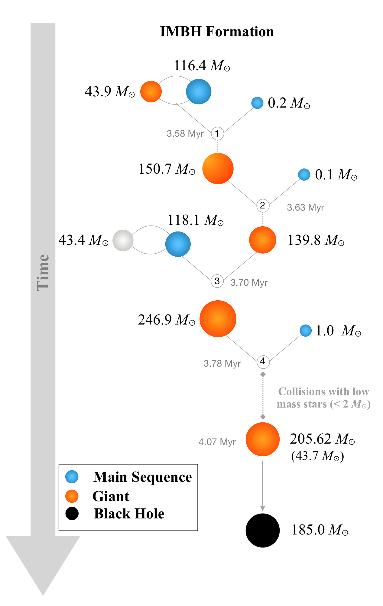
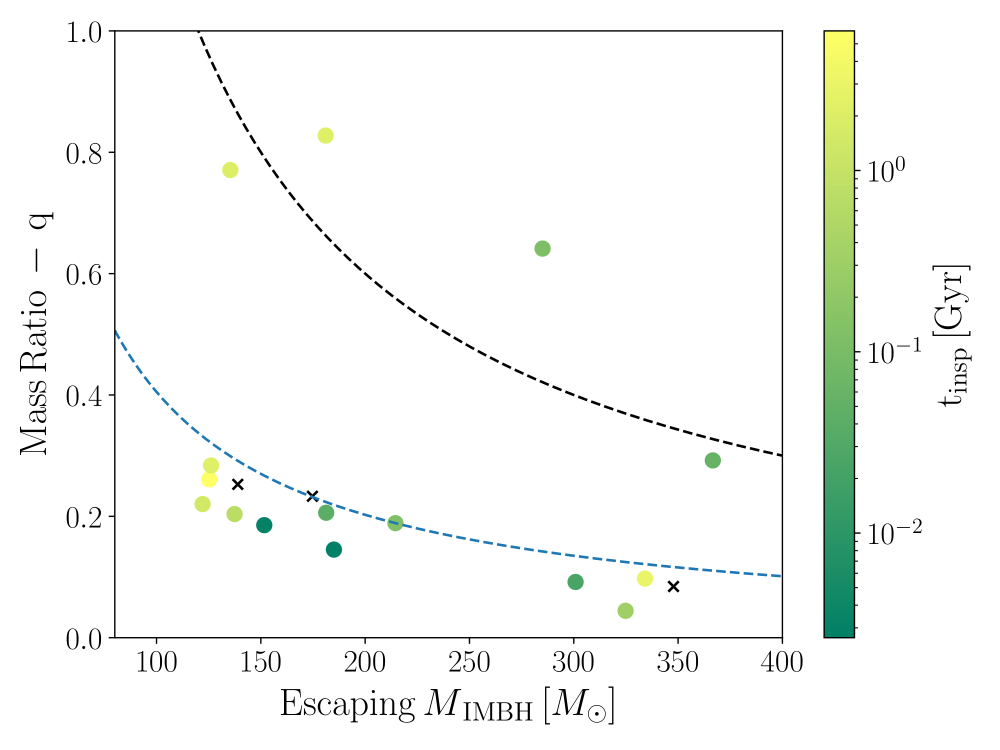
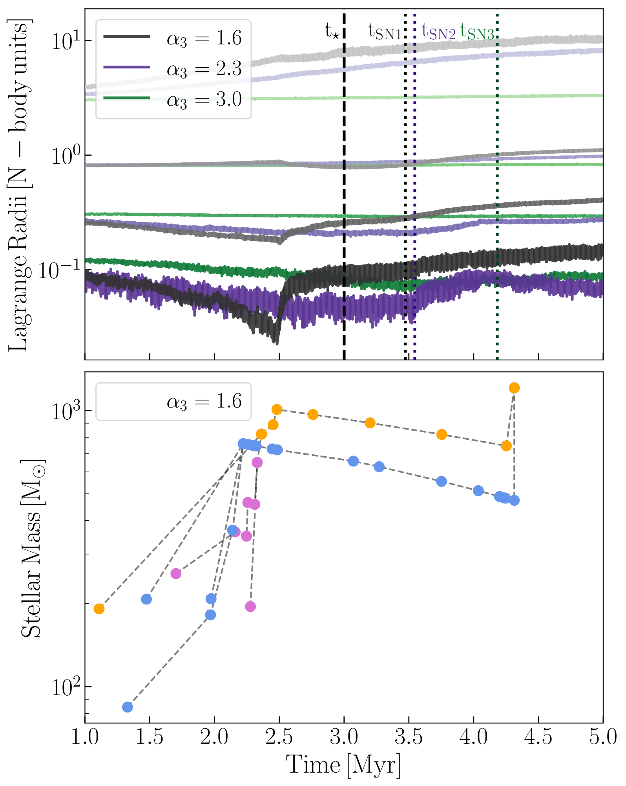

Dense stellar systems, such as young massive clusters, globular clusters, and nuclear star clusters, are natural laboratories for stellar collisions, tidal disruption events, and mergers between compact objects. In these environments, dynamical encounters can result in exotic populations including X-ray binaries, radio pulsars, and massive black holes that would not form in isolated single-star evolution.
To study the dynamical evolution of star clusters, I use the Cluster Monte Carlo code (CMC), a parallelized Hénon-type Monte Carlo N-body code. As one of the lead developers of CMC, I have incorporated the loss-cone physics needed to accurately model the presence of a central massive black hole.
Isolated single-star evolution predicts an “upper mass gap” in the black hole spectrum from roughly 40 to 120 M⊙, set by (pulsational) pair-instability supernovae. One way to populate that gap is the collapse of a very massive star (VMS) built through repeated collisions in a dense cluster.
In González et al. (2021) we explored the role of the primordial binary fraction of massive stars in this formation pathway. We found that for clusters with parameters typical of Milky Way globular clusters and binary fractions consistent with field massive stars, massive binaries drive binary-mediated encounters, leading to the formation of intermediate-mass black holes (≳120 M⊙, IMBHs). The figure on the right shows a typical collision tree leading to an IMBH.

Forming an IMBH is only half the story — retaining it in the cluster is the other half! In González Prieto et al. (2022) we followed these massive black holes over longer timescales and asked whether they remain in present-day clusters or escape as gravitational-wave sources.
In our models, all IMBHs were ejected within the first ∼500 Myr, either by gravitational-wave recoil after a black hole merger or by dynamical kicks from few-body scatterings. Some of the IMBHs were ejected in a binary with another black hole, with short enough inspiral timescales that they might become LIGO sources. The figure on the right shows the mass of the IMBH and the mass ratio with its companion, colored by the inspiral timescale. Binaries above the dashed black line are IMBH pairs, while those above the blue dashed line had upper-mass-gap companions.

In González Prieto et al. (2024) we mapped how cluster initial conditions control VMS growth — and therefore IMBH seed mass — with a large grid of CMC models. We vary the number of stars, cluster density, stellar initial mass function (IMF), and primordial binary fraction.
Denser clusters born with top-heavy IMFs enter strong collisional regimes and form VMSs that easily exceed 1000 M⊙. The upper panel of the figure on the right shows the evolution of the Lagrange radii (from top to bottom enclosing 99%, 50%, 10%, and 1% of the cluster's total mass) as a function of time for different IMF slopes. The top-heavy model (in black) experiences a core collapse before the main-sequence lifetime for the most massive stars in the cluster (shown as a vertical black dashed line), allowing the stars to collide before significant mass loss from stellar evolution heats up the core of the cluster. The bottom panel shows the different collisional trees that lead to the formation of a VMS. In the paper we also derive a fitting formula for the typical VMS mass as a function of cluster properties, which can be used as seeding prescriptions in large-scale simulations.
